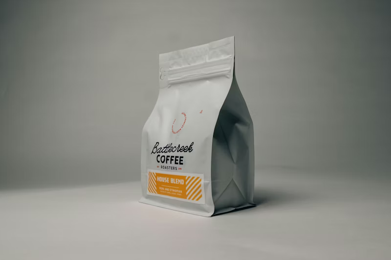

Transformasi digital perkebunan kopi Anda dengan monitoring real-time. Deteksi tingkat kematangan otomatis menggunakan sensor RGB dan Load Cell terintegrasi cloud.

Perangkat
BeanSense menggunakan ESP32 sebagai mikrokontroller utama yang terhubung dengan sensor TCS3200 untuk membaca warna buah kopi secara akurat. Sensor infrared mendeteksi kehadiran buah dan menghitung total buah yang masuk, sementara motor servo mengarahkan buah ke wadah yang sesuai hasil klasifikasi.
Mikrokontroller utama pengolah data sensor dan pengendali sistem.
Sensor warna RGB untuk mendeteksi tingkat kematangan buah kopi.
Mendeteksi kehadiran buah dan menghitung total buah yang masuk.
Menggerakkan sortir buah ke wadah sesuai hasil klasifikasi.
Proses
Sistem bekerja secara otomatis mulai dari deteksi buah hingga pengiriman laporan harian.
Sensor infrared mendeteksi buah kopi yang masuk ke konveyor dan memicu sistem berjalan.
TCS3200 membaca nilai RGB dan Fuzzy Sugeno mengklasifikasikan buah menjadi Matang, Belum Matang, atau Busuk.
Motor servo mengarahkan buah ke wadah yang sesuai, data dikirim ke server dan laporan harian dikirim otomatis.
Kelompok
Dikembangkan oleh mahasiswa D3 Teknik Komputer sebagai Project Base Learning.
Tentang
BeanSense adalah sistem penyortiran buah kopi otomatis berbasis IoT yang dikembangkan sebagai proyek akhir semester D3 Teknik Komputer. Sistem ini mengintegrasikan empat mata kuliah yaitu IoT, Microservice, Administrasi Jaringan, dan Keamanan Komputer dalam satu platform terpadu yang siap digunakan di perkebunan kopi skala kecil hingga menengah.